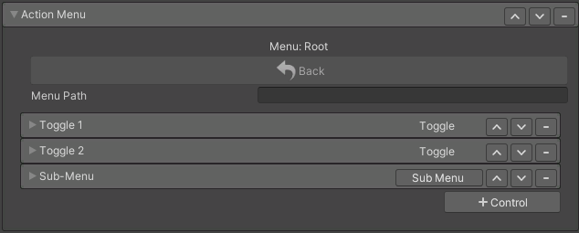
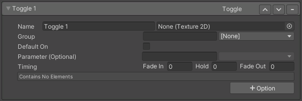

Action Menu

Used to add controls to your avatar which are accessable through the VRChat Action Menu.
Controls
Toggle
A control which can be toggled ON/OFF.

- Group: Specifies which group the toggle belongs to, you can use any string to represent a group. When grouped, only one toggle turned ON at a time.
- Default: Which toggle is ON by default for the group.
- Off State: Which toggle represents the OFF state for the group. This toggle turns ON when other the other grouped toggles are turned OFF.
- Default On: When enabled the toggle will start ON
- Parameter: The parameter used for this control. If left blank, or the parameter name does not exist, one will be auto-generated.
- Fade In: Time in seconds for the control to fade in.
- Fade Out: Time in seconds for the control to fade out.
- Hold: Time in seconds the control will stay ON before fading out. For example, you may want an animation to play for minimum of X seconds even if the user has turned the control OFF.
Options
Options determine what happens when using a control. Learn about Options.